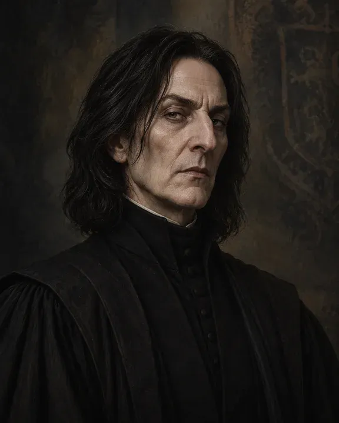

Sklepení
Učebna lektvarů
Profesor lektvarů dohlíží na kotlíky. Jeden z předních kotlíků je připravený pro praktickou hodinu.
Krátký test
10 otázek z lektvarů
10 otázek z lektvarů
Sklepení
Profesor lektvarů dohlíží na kotlíky. Jeden z předních kotlíků je připravený pro praktickou hodinu.
Praktická hodina
Recept uvidíš 30 sekund. Potom zmizí a každé kliknutí se počítá.

„Čtěte recept pozorně. Podruhé ho neuvidíte.“

Online duel pro dva studenty
Stejný recept, stejné přísady. Rozhoduje dokončení, počet chyb a potom čas.
Jeden student vytvoří místnost a pošle šestimístný kód spolužákovi.
Kód místnosti: —
Po 20 sekundách recept automaticky zmizí.